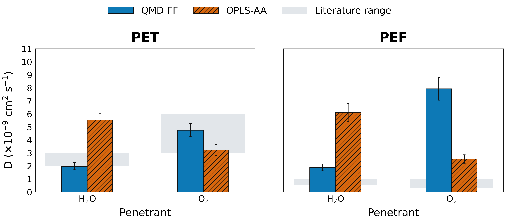
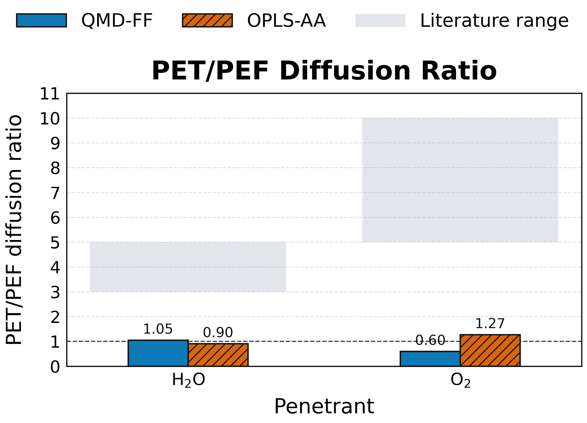
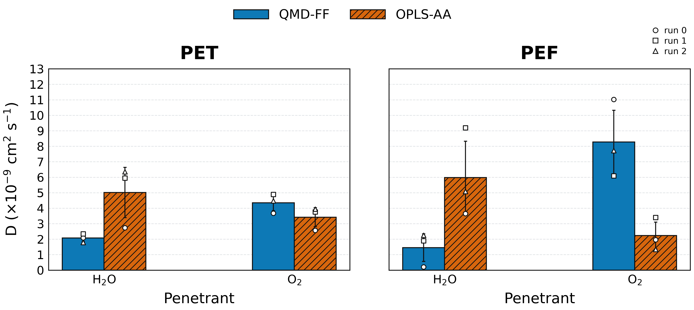

Diffusion coefficients for water and oxygen were extracted from the 1 microsecond production trajectories with the DiffusionGLS workflow. Unless otherwise noted, the discussion below refers to the pooled analysis, in which the 32 penetrant molecules from each of the three replicas were combined into a single data set for each system and the uncertainty was taken as the empirical SEM returned by the GLS analysis. The replica-averaged analysis, where the three independent runs are first analyzed separately and then combined as mean plus or minus standard deviation, leads to the same qualitative picture. For context, the simulation results are compared below with typical room-temperature literature values reported for amorphous PET and PEF [REF: room-temperature oxygen transport in PET/PEF; REF: room-temperature water transport in PET/PEF].
The literature benchmark is fairly clear. Near room temperature, amorphous PET typically shows oxygen diffusivities of about 3-6 x 10-9 cm2 s-1, whereas amorphous PEF is usually reported around 0.3-1 x 10-9 cm2 s-1. For water, the corresponding ranges are about 2-3 x 10-9 cm2 s-1 in PET and 0.5-1 x 10-9 cm2 s-1 in PEF. Experimental and prior modeling work therefore point to the same qualitative ordering for both penetrants, namely slower diffusion in PEF than in PET, with a much stronger PET/PEF contrast for oxygen than for water [REF: Burgess et al. for O2 transport/permeability in PET/PEF; REF: water sorption and transport in PET/PEF; REF: Lightfoot et al. for PET/PEF oxygen-diffusion modeling].
Within OPLS-AA, water is consistently more mobile than oxygen in both polymer matrices. In PEF, DWAT = 6.11 +/- 0.68 x 10-9 cm2 s-1, whereas DO2 = 2.53 +/- 0.32 x 10-9 cm2 s-1, corresponding to a water/oxygen ratio of 2.41. In PET, the same ordering is preserved, with DWAT = 5.53 +/- 0.53 x 10-9 cm2 s-1 and DO2 = 3.22 +/- 0.41 x 10-9 cm2 s-1, giving a water/oxygen ratio of 1.71. Relative to the literature, OPLS-AA therefore performs unevenly. For oxygen, it preserves the expected PET > PEF ordering and places PET almost exactly in the reported experimental range, but it still predicts PEF oxygen diffusion that is much too high and a PET/PEF contrast of only 1.27, far below the 5-10x reduction generally reported for PEF. For water, the disagreement is stronger: both polymers are too fast, and the model even predicts PEF water diffusion to be slightly faster than PET, opposite to the literature trend [REF: oxygen diffusion benchmark PET/PEF; REF: water diffusion benchmark PET/PEF].
The QMD-FF force field produces a markedly different transport pattern. Water diffusivity decreases to 1.88 +/- 0.27 x 10-9 cm2 s-1 in PEF and 1.98 +/- 0.28 x 10-9 cm2 s-1 in PET, while oxygen becomes the faster penetrant, with DO2 = 7.92 +/- 0.86 x 10-9 cm2 s-1 in PEF and 4.75 +/- 0.52 x 10-9 cm2 s-1 in PET. Consequently, the water/oxygen ratio drops below unity, to 0.24 in PEF and 0.42 in PET, meaning that oxygen diffuses about 4.2 times faster than water in PEF and about 2.4 times faster in PET. In terms of literature comparison, QMD-FF is somewhat better for the absolute magnitude of water diffusion, especially in PET, but it still makes water transport almost polymer-independent (PET/PEF = 1.05) instead of reproducing the reported 3-5x slowdown in PEF. Its oxygen prediction is qualitatively inconsistent with experiment and prior modeling, because it reverses the PET/PEF ordering and makes oxygen diffuse about 40% faster in PEF than in PET [REF: oxygen diffusion benchmark PET/PEF; REF: PET/PEF oxygen-diffusion modeling].
A direct comparison at fixed polymer highlights the magnitude of the force-field effect. Relative to OPLS-AA, QMD-FF reduces water diffusivity by about 69% in PEF and 64% in PET, while increasing oxygen diffusivity by a factor of 3.1 in PEF and by about 47% in PET. Because the oxygen and water models were kept unchanged and the cross interactions were generated with the same combination rules in both sets of simulations, these differences can be attributed primarily to the different polymer descriptions produced by the two force fields. Literature discussions of PET and PEF attribute the lower diffusivity of PEF not simply to smaller static free volume, but to reduced segmental mobility, higher torsional barriers for furan-based motions, and poorer connectivity of transient free-volume channels. From that perspective, OPLS-AA appears to retain part of the expected barrier character of PEF for oxygen, but not strongly enough, whereas QMD-FF makes the PEF matrix too dynamically permissive for oxygen hopping [REF: chain mobility / free-volume connectivity in PET vs PEF; REF: furan-vs-phenyl torsional dynamics]. This point is especially important when interpreting diffusion with QMD-FF. The QMD-FF nonbonded parameters are deliberately tailored to reproduce polymer-specific descriptors, so using standard, non-optimized Lennard-Jones cross terms for water/polymer and oxygen/polymer interactions is a more delicate transferability test and, in that sense, a more pronounced leap of faith than for a general-purpose force field [REF: QMD-FF parameterization paper]. By contrast, OPLS-AA is intrinsically more transferable and was developed in a much more favorable position for this type of mixed interaction, so applying its established combination rules to penetrant/polymer cross terms is a less severe extrapolation [REF: OPLS-AA transferability / combination-rule reference]. This likely matters more for diffusion than for pure-polymer observables, because diffusional motion probes not only polymer packing but also the detailed balance of weak penetrant-polymer contacts along the hopping pathway. The replica-averaged values support the same trends; the only combination showing substantial run-to-run variability is water in PEF with QMD-FF, for which the replica average is 1.45 +/- 0.89 x 10-9 cm2 s-1. Water should also be interpreted more cautiously than oxygen because PEF is known to sorb more water than PET, so diffusivity alone does not map directly onto total barrier performance, especially once humidity-driven plasticization becomes important [REF: water sorption in PET vs PEF; REF: humidity-driven plasticization / non-Fickian transport]. Overall, neither force field reproduces the experimentally expected simultaneous suppression of oxygen and water diffusion in PEF, although OPLS-AA is closer for the oxygen ordering and QMD-FF gives water diffusivities that are closer to the PET literature magnitude.

Figure X. Pooled diffusion coefficients for water and oxygen in PET and PEF, comparing QMD-FF and OPLS-AA. Bars report the pooled 96-trajectory DiffusionGLS estimates and error bars show the empirical SEM. The gray shaded bands indicate representative room-temperature literature ranges for the corresponding penetrant/polymer combinations in amorphous PET and PEF.

Figure Y. PET/PEF diffusion ratios derived from the pooled DiffusionGLS estimates. Ratios above unity indicate slower diffusion in PEF than in PET, whereas ratios below unity indicate the opposite trend. Gray shaded bands indicate representative literature ranges for the expected PET/PEF contrast, highlighting the substantially stronger experimental suppression reported for oxygen than for water.
| Force field | Polymer | Penetrant | Pooled D +/- empirical SEM | Replica average D +/- std |
|---|---|---|---|---|
| OPLS-AA | PEF | Water | 6.11 +/- 0.68 | 5.98 +/- 2.35 |
| OPLS-AA | PEF | Oxygen | 2.53 +/- 0.32 | 2.23 +/- 0.87 |
| OPLS-AA | PET | Water | 5.53 +/- 0.53 | 5.01 +/- 1.62 |
| OPLS-AA | PET | Oxygen | 3.22 +/- 0.41 | 3.42 +/- 0.61 |
| QMD-FF | PEF | Water | 1.88 +/- 0.27 | 1.45 +/- 0.89 |
| QMD-FF | PEF | Oxygen | 7.92 +/- 0.86 | 8.27 +/- 2.05 |
| QMD-FF | PET | Water | 1.98 +/- 0.28 | 2.07 +/- 0.23 |
| QMD-FF | PET | Oxygen | 4.75 +/- 0.52 | 4.35 +/- 0.51 |
Table values are reported in units of x 10-9 cm2 s-1. The pooled analysis uses all three replicas simultaneously, whereas the replica-average column reports the mean and standard deviation over the three independent runs.

Figure S1. Replica-average diffusion coefficients for water and oxygen in PET and PEF, comparing QMD-FF and OPLS-AA. Bars report the mean over the three independent replicas and error bars show the standard deviation across replicas. Open markers denote the individual replica values used to assess the run-to-run variability.